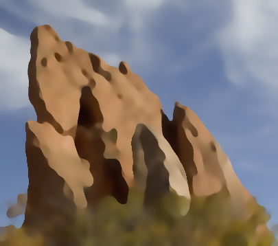

Uploaded Images
Upload Original Image:
Upload Guidance Image:
Original |
Guidance |
画像のsmoothingの処理として、元々実装されていたGaussian filterに加えて、Bilateral filter, Joint bilateral filter, Rolling guidance filterの3種類を実装した。元画像とJoint bilateral filter用のガイド画像はそれぞれ下のUpload Imagesの所からアップロードができる。パラメータsigma_space, sigma_range, iterations(=Rolling guidance filterの繰り返し適用回数)はResult Imagesの下の入力ボックスで調整できる。
実装の説明と考察は最下部にあります。
Upload Original Image:
Upload Guidance Image:
Original |
Guidance |
Smoothed |
Detail = Original - Smoothed |
Enhanced = Smoothed + s * Detail |
Joint bilateral filterは、与えられたサンプルプログラムを元に、各画素値にターゲット画素との距離のGaussian kernelに加えて、ガイド画像における画素値の距離(=sqrt((r1-r0)^2 + (g1-g0)^2 + (b1-b0)^2))を掛けたものを重みとしている。Bilateral filterは、Joint bilateral filterのガイド画像=入力画像とすることで実装している。
以下は初期設定のパラメータ値でGaussian, Bilateral, Rolling Guidanceの各フィルタを適用した結果である。
Gaussian Filter |
 Bilateral Filter |
 Rolling Guidance Filter |
これを見ると、Bilateral filterとRolling guidance filterはGaussian filterに比べてedge-awareな平滑化が行われていると分かる。また、Rolling guidance filterはBilateral filterに比べると、岩の細かい影の部分(細かいテクスチャだが色調の差は大きい部分)が平滑になっている傾向がある。一方で、色調が離散化しているほか、エッジの形も元画像より丸みを帯びて変わってしまっており、この画像においては、Rolling guidance filterは平滑化の手法として適切でないように思われる。